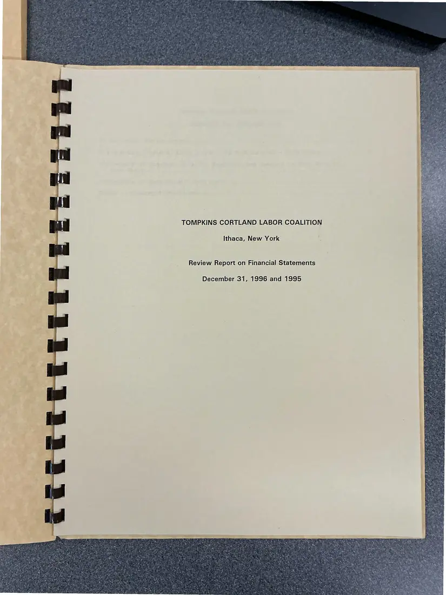
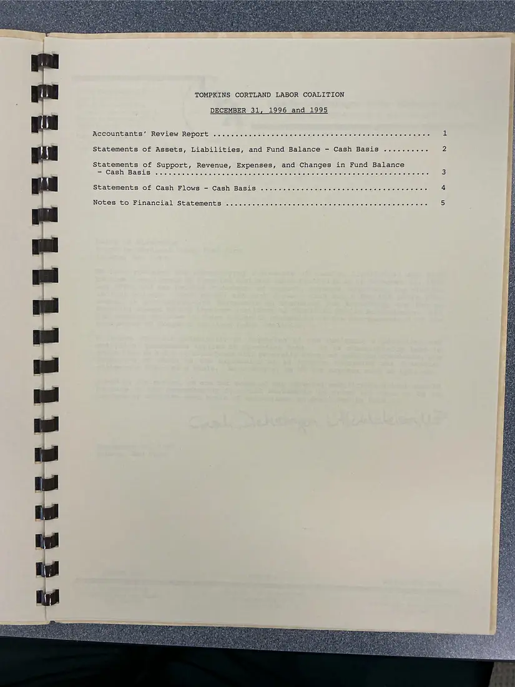
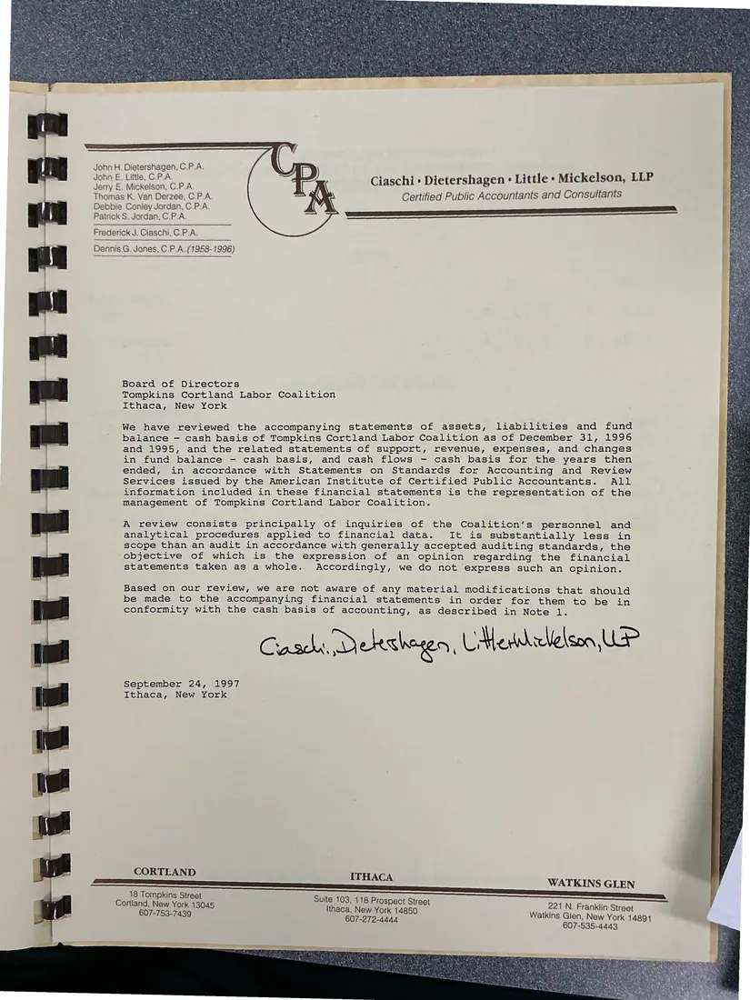
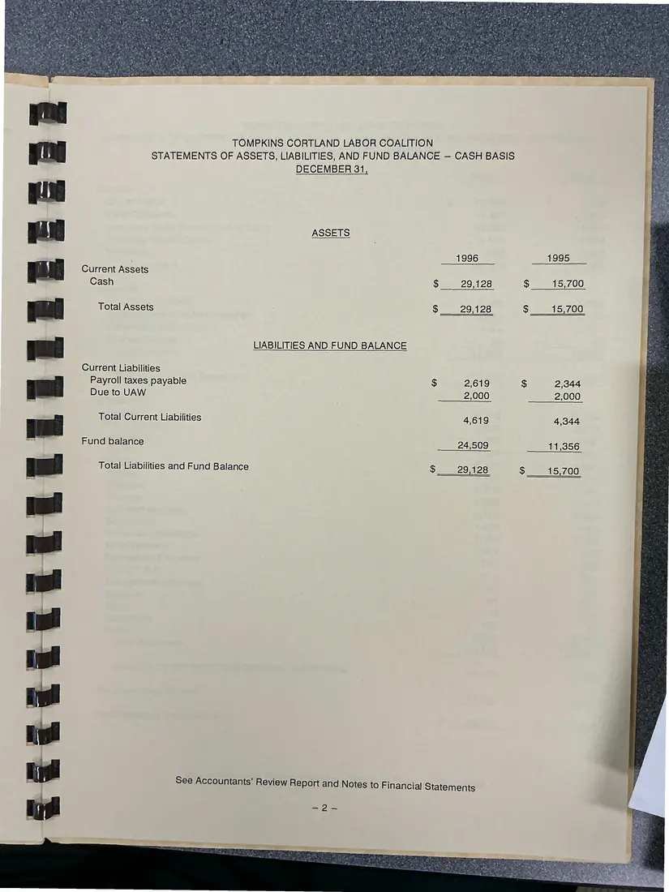
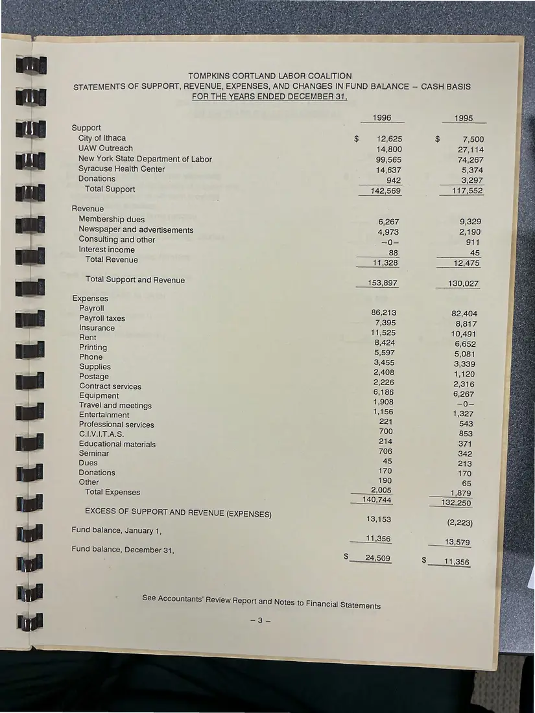
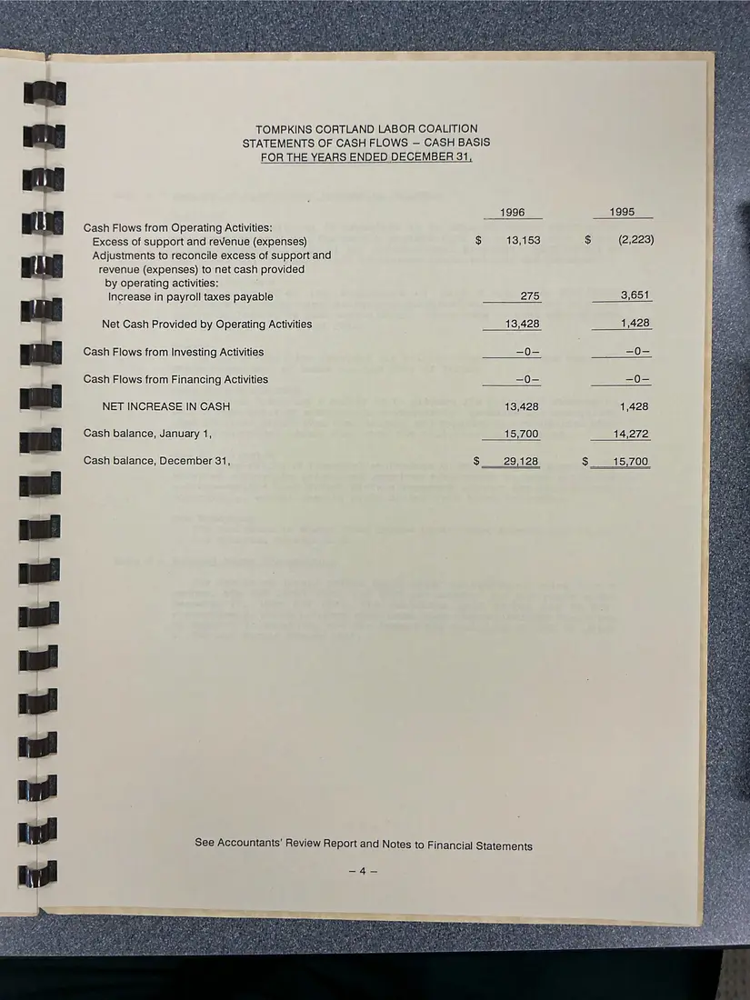
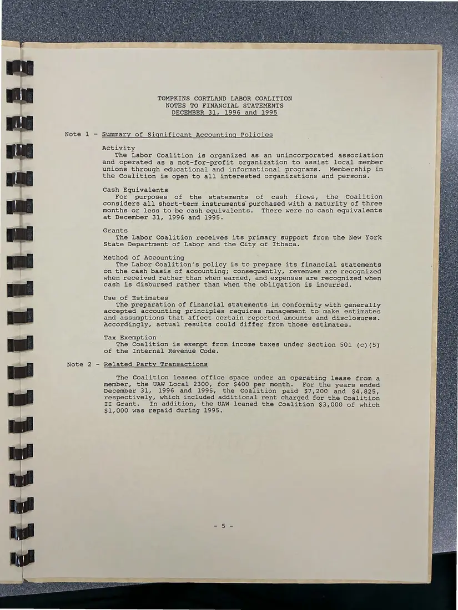

Financial report, 7 pages
Tompkins Cortland Labor Coalition review report on financial statements, 1996 and 1995
December 31, 1996 and 1995 (report dated September 24, 1997)
An accountants' review report (September 24, 1997) on the Coalition's 1996 and 1995 financial statements. The pages were photographed back-to-front and are shown in reading order.
Download or cite this itemPages


(open zoom view)Read the page text (OCR text, mostly readable)
This text was read from the photograph (OCR) and has not been corrected. The image is the authoritative record.
TOMPKINS CORTLAND LABOR COALITION Ithaca, New York Review Report on Financial Statements December 31, 1996 and 1995


(open zoom view)Read the page text (OCR text, many errors)
This text was read from the photograph (OCR) and has not been corrected. The image is the authoritative record.
TOMPKINS CORTLAND LABOR COALITION DECEMBER 31, 1996 and 1995 ACGOUNtANts’ REViewW Report 26 o. sjcc ccs 6 ce «cesses aise O16 oo eet wise o ale oso orale a creme Statements of Assets, Liabilities, and Fund Balance - Cash Basis .......... 2 Statements of Support, Revenue, Expenses, and Changes in Fund Balance ey CABN BAS US 5100 sis crews stele iojs sco sas she ssens ci ecelolelciepehore o o¥e cl els Sreieiio «el egeisie S(T tee ha eee statements of Cash! Plowsi— Cash Basis sete. cicicic cic ctocicieie ccs s ce cones cleo ieverelsn 6 4 a Notes itovFinanciale Statement sipacestscictaclcrche costae tac doe cis ere chs Siete ee eierc eee roaie ce cies 5)


(open zoom view)Read the page text (OCR text, mostly readable)
This text was read from the photograph (OCR) and has not been corrected. The image is the authoritative record.
John H. Dietershagen, C.P.A. John E, Little, C.P.A. Jerry E. Mickelson, C.P.A. Thomas K. Van Derzee, C.P.A. Debbie Conley Jordan, C.P.A. Patrick S. Jordan, C.P.A. Frederick J. Ciaschi, C.P.A. Dennis G. Jones, C.P.A. (1958-1996) Ciaschi » Dietershagen : Little + Mickelson, LLP : Certified Public Accountants and Consultants Pi Board of Directors f Tompkins Cortland Labor Coalition : ‘ Ithaca, New York We have reviewed the accompanying statements of assets, liabilities and fund balance - cash basis of Tompkins Cortland Labor Coalition as of December 31, 1996 and 1995, and the related statements of support, revenue, expenses, and changes in fund balance - cash basis, and cash flows - cash basis for the years then ended, in accordance with Statements on Standards for Accounting and Review Services issued by the American Institute of Certified Public Accountants. All information included in these financial statements is the representation of the management of Tompkins Cortland Labor Coalition. A review consists principally of inquiries of the Coalition’s personnel and Oe analytical procedures applied to financial data. It is substantially less in &s scope than an audit in accordance with generally accepted auditing standards, the objective of which is the expression of an opinion regarding the financial statements taken as a whole. Accordingly, we do not express such an opinion. Based on our review, we are not aware of any material modifications that should be made to the accompanying financial statements in order for them to be in conformity with the cash basis of accounting, as described in Note 1. Casdy, Dekshyen, Medellelson UP September 24, 1997 Ithaca, New York CORTLAND ITHACA WATKINS GLEN 18 Tompkins Street Suite 103, 118 Prospect Street Cortland, New Y ; Ee EE Ithaca, New York 14850 221 N. Franklin Street 607-272-4444 Watkins eerinewvon 14891


(open zoom view)Read the page text (OCR text, mostly readable)
This text was read from the photograph (OCR) and has not been corrected. The image is the authoritative record.
SECEELLLLLELEEE SS: Current Assets Cash TOMPKINS CORTLAND LABOR COALITION STATEMENTS OF ASSETS, LIABILITIES, AND FUND BALANCE — CASH BASIS DECEMBER 31 ASSETS © Total Assets LIABILITIES AND FUND BALANCE Current Liabilities Payroll taxes payable Due to UAW Total Current Liabilities Fund balance Total Liabilities and Fund Balance 1996 $ 29,128 $ 29,128 $ 2,619 2,000 4,619 24,509 $ 29,128 1995 $ 15,700 $ 15,700 $ 2,344 2,000 4,344 11,356 $ 15,700


(open zoom view)Read the page text (OCR text, mostly readable)
This text was read from the photograph (OCR) and has not been corrected. The image is the authoritative record.
: j ni SELLE LELELEEE TOMPKINS CORTLAND LABOR COALITION FOR THE YEARS ENDED DECEMBER 31, 1996 Support City of Ithaca $ 12,625 UAW Outreach 14,800 New York State Department of Labor 99,565 Syracuse Health Center 14,637 Donations hee: Total Support __ 142,569. Revenue Membership dues 6,267 Newspaper and advertisements 4,973 Consulting and other =O Interest income 88 Total Revenue 11,328 Total Support and Revenue 153,897 Expenses Payroll 86,213 Payroll taxes 7,395 Insurance 11,525 Rent 8,424 Printing 5,597 Phone 3,455 Supplies 2,408 Postage 2,226 Contract services 6,186 Equipment 1,908 Travel and meetings 1,156 Entertainment 201 Professional services 700 C.I.V.I.T.A.S. 214 Educational materials 706 Seminar 45 Dues 170 Donations 190 Other 2,005 Total Expenses 140,744. EXCESS OF SUPPORT AND REVENUE (EXPENSES) 13,153 Fund balance, January 1, 11,356 Fund balance, December 31 ; $ 24,509 See Accountants’ Review Report and Notes to Financial Statements STATEMENTS OF SUPPORT, REVENUE, EXPENSES, AND CHANGES IN FUND BALANCE — CASH BASIS 1995 7,500 27,114 74,267 5,374 3,297 117,552 9,329 2,190 911 12,475 130,027


(open zoom view)Read the page text (OCR text, mostly readable)
This text was read from the photograph (OCR) and has not been corrected. The image is the authoritative record.
TOMPKINS CORTLAND LABOR COALITION STATEMENTS OF CASH FLOWS — CASH BASIS FOR THE YEARS ENDED DECEMBER 31, Cash Flows from Operating Activities: Excess of support and revenue (expenses) Adjustments to reconcile excess of support and revenue (expenses) to net cash provided by operating activities: Increase in payroll taxes payable Net Cash Provided by Operating Activities Cash Flows from Investing Activities Cash Flows from Financing Activities NET INCREASE IN CASH Cash balance, January 1, Cash balance, December 31, See Accountants’ Review Report and Notes to Financial Statements eat Pik em nig gir : pie ant ia! in!


(open zoom view)Read the page text (OCR text, mostly readable)
This text was read from the photograph (OCR) and has not been corrected. The image is the authoritative record.
TOMPKINS CORTLAND LABOR COALITION NOTES TO FINANCIAL STATEMENTS DECEMBER 31, 1996 and 1995 Note 1 - Summary of Significant Accounting Policies Activity The Labor Coalition is organized as an unincorporated association and operated as a not-for-profit organization to assist local member unions through educational and informational programs. Membership in the Coalition is open to all interested organizations and persons. Cash Equivalents For purposes of the statements of cash flows, the Coalition considers all short-term instruments purchased with a maturity of three months or less to be cash equivalents. There were no cash equivalents at December 31, 1996 and 1995. Grants The Labor Coalition receives its primary support from the New York State Department of Labor and the City of Ithaca. Method of Accounting The Labor Coalition’s policy is to prepare its financial statements on the cash basis of accounting; consequently, revenues are recognized when received rather than when earned, and expenses are recognized when cash is disbursed rather than when the obligation is incurred. Use of Estimates The preparation of financial statements in conformity with generally accepted accounting principles requires management to make estimates and assumptions that affect certain reported amounts and disclosures. Accordingly, actual results could differ from those estimates. Tax Exemption The Coalition is exempt from income taxes under Section 501 (c) (5) of the Internal Revenue Code. Related Party Transactions The Coalition leases office space under an operating lease from a member, the UAW Local 2300, for $400 per month. For the years ended December 31, 1996 and 1995, the Coalition paid $7,200 and $4,825, respectively, which included additional rent charged for the Coalition II Grant. In addition, the UAW loaned the Coalition $3,000 of which $1,000 was repaid during 1995.
See something wrong, or recognize a person or event? Send a correction. If you hold rights in this item or think it should not be public, write to the same address.